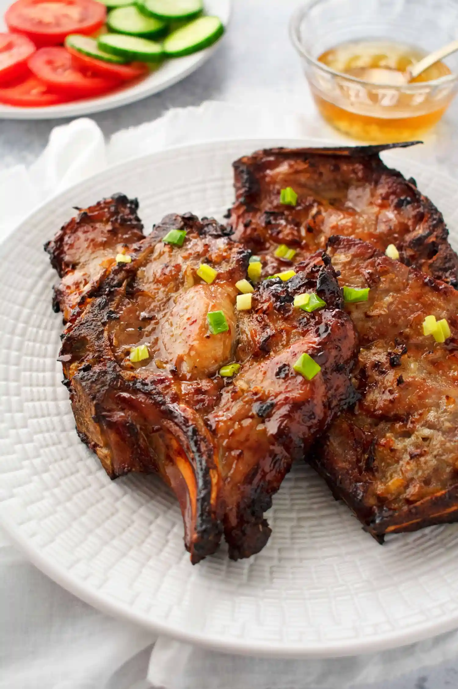

Porkchops

Description
A timeless classic in vietnamese cuisine, featuring porkchops
seasoned with lemon grass and fish sauce.
Ingredients
- 12 cloves of garlic minced
- 3 tbsp lemongrass minced
- 3 tbsp fish sauce
- 3 tbsp honey
- 6 tbsp oil
- 1 tsp black pepper
- 2 servings porkchops
Steps
- If porkchop is thick, flatten and cut slits.
- Rinse in salt water and pat dry before marinating.
Marinate overnight for best results.
- Pan fry porkchops in pan with oil.